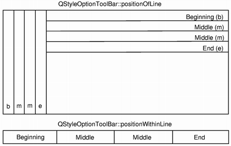

QStyleOptionToolBar Class
The QStyleOptionToolBar class is used to describe the parameters for drawing a toolbar. More...
| Header: | #include <QStyleOptionToolBar> |
| CMake: | find_package(Qt6 REQUIRED COMPONENTS Widgets) target_link_libraries(mytarget PRIVATE Qt6::Widgets) |
| qmake: | QT += widgets |
| Inherits: | QStyleOption |
Public Types
| enum | StyleOptionType { Type } |
| enum | StyleOptionVersion { Version } |
| enum | ToolBarFeature { None, Movable } |
| flags | ToolBarFeatures |
| enum | ToolBarPosition { Beginning, Middle, End, OnlyOne } |
Public Functions
| QStyleOptionToolBar() | |
| QStyleOptionToolBar(const QStyleOptionToolBar &other) |
Public Variables
| QStyleOptionToolBar::ToolBarFeatures | features |
| int | lineWidth |
| int | midLineWidth |
| QStyleOptionToolBar::ToolBarPosition | positionOfLine |
| QStyleOptionToolBar::ToolBarPosition | positionWithinLine |
| Qt::ToolBarArea | toolBarArea |
Detailed Description
QStyleOptionToolBar contains all the information that QStyle functions need to draw QToolBar.
The QStyleOptionToolBar class holds the lineWidth and the midLineWidth for drawing the widget. It also stores information about which area the toolbar should be located in, whether it is movable or not, which position the toolbar line should have (positionOfLine), and the toolbar's position within the line (positionWithinLine).
In addition, the class provides a couple of enums: The ToolBarFeature enum is used to describe whether a toolbar is movable or not, and the ToolBarPosition enum is used to describe the position of a toolbar line, as well as the toolbar's position within the line.
For performance reasons, there are few member functions and the access to the member variables is direct (i.e., using the . or -> operator). This makes the structures straightforward to use and emphasizes that these are simply parameters used by the style functions.
See also QStyleOption.
Member Type Documentation
enum QStyleOptionToolBar::StyleOptionType
This enum is used to hold information about the type of the style option, and is defined for each QStyleOption subclass.
| Constant | Value | Description |
|---|---|---|
QStyleOptionToolBar::Type | SO_ToolBar | The type of style option provided (SO_ToolBar for this class). |
The type is used internally by QStyleOption, its subclasses, and qstyleoption_cast() to determine the type of style option. In general you do not need to worry about this unless you want to create your own QStyleOption subclass and your own styles.
See also StyleOptionVersion.
enum QStyleOptionToolBar::StyleOptionVersion
This enum is used to hold information about the version of the style option, and is defined for each QStyleOption subclass.
| Constant | Value | Description |
|---|---|---|
QStyleOptionToolBar::Version | 1 | 1 |
The version is used by QStyleOption subclasses to implement extensions without breaking compatibility. If you use qstyleoption_cast(), you normally do not need to check it.
See also StyleOptionType.
enum QStyleOptionToolBar::ToolBarFeature
flags QStyleOptionToolBar::ToolBarFeatures
This enum is used to describe whether a toolbar is movable or not.
| Constant | Value | Description |
|---|---|---|
QStyleOptionToolBar::None | 0x0 | The toolbar cannot be moved. The default value. |
QStyleOptionToolBar::Movable | 0x1 | The toolbar is movable, and a handle will appear when holding the cursor over the toolbar's boundary. |
The ToolBarFeatures type is a typedef for QFlags<ToolBarFeature>. It stores an OR combination of ToolBarFeature values.
See also features and QToolBar::isMovable().
enum QStyleOptionToolBar::ToolBarPosition

This enum is used to describe the position of a toolbar line, as well as the toolbar's position within the line.
The order of the positions within a line starts at the top of a vertical line, and from the left within a horizontal line. The order of the positions for the lines is always from the parent widget's boundary edges.
| Constant | Value | Description |
|---|---|---|
QStyleOptionToolBar::Beginning | 0 | The toolbar is located at the beginning of the line, or the toolbar line is the first of several lines. There can only be one toolbar (and only one line) with this position. |
QStyleOptionToolBar::Middle | 1 | The toolbar is located in the middle of the line, or the toolbar line is in the middle of several lines. There can several toolbars (and lines) with this position. |
QStyleOptionToolBar::End | 2 | The toolbar is located at the end of the line, or the toolbar line is the last of several lines. There can only be one toolbar (and only one line) with this position. |
QStyleOptionToolBar::OnlyOne | 3 | There is only one toolbar or line. This is the default value of the positionOfLine and positionWithinLine variables. |
See also positionWithinLine and positionOfLine.
Member Function Documentation
QStyleOptionToolBar::QStyleOptionToolBar()
Constructs a QStyleOptionToolBar, initializing the members variables to their default values.
QStyleOptionToolBar::QStyleOptionToolBar(const QStyleOptionToolBar &other)
Constructs a copy of the other style option.
Member Variable Documentation
QStyleOptionToolBar::ToolBarFeatures QStyleOptionToolBar::features
This variable holds whether the toolbar is movable or not.
The default value is None.
int QStyleOptionToolBar::lineWidth
This variable holds the line width for drawing the toolbar.
The default value is 0.
int QStyleOptionToolBar::midLineWidth
This variable holds the mid-line width for drawing the toolbar.
The default value is 0.
QStyleOptionToolBar::ToolBarPosition QStyleOptionToolBar::positionOfLine
This variable holds the position of the toolbar line.
The default value is QStyleOptionToolBar::OnlyOne.
QStyleOptionToolBar::ToolBarPosition QStyleOptionToolBar::positionWithinLine
This variable holds the position of the toolbar within a line.
The default value is QStyleOptionToolBar::OnlyOne.
Qt::ToolBarArea QStyleOptionToolBar::toolBarArea
This variable holds the location for drawing the toolbar.
The default value is Qt::TopToolBarArea.
See also Qt::ToolBarArea.